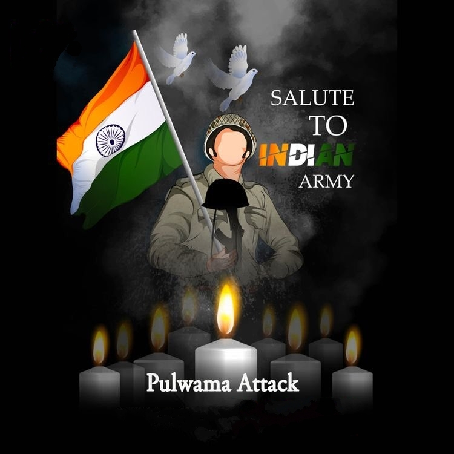
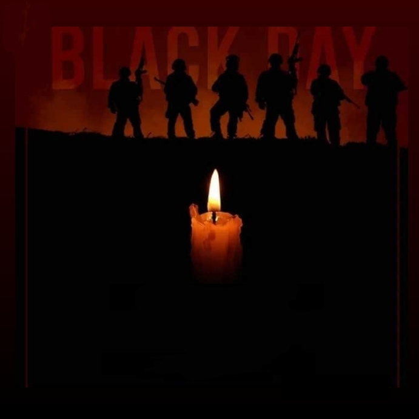
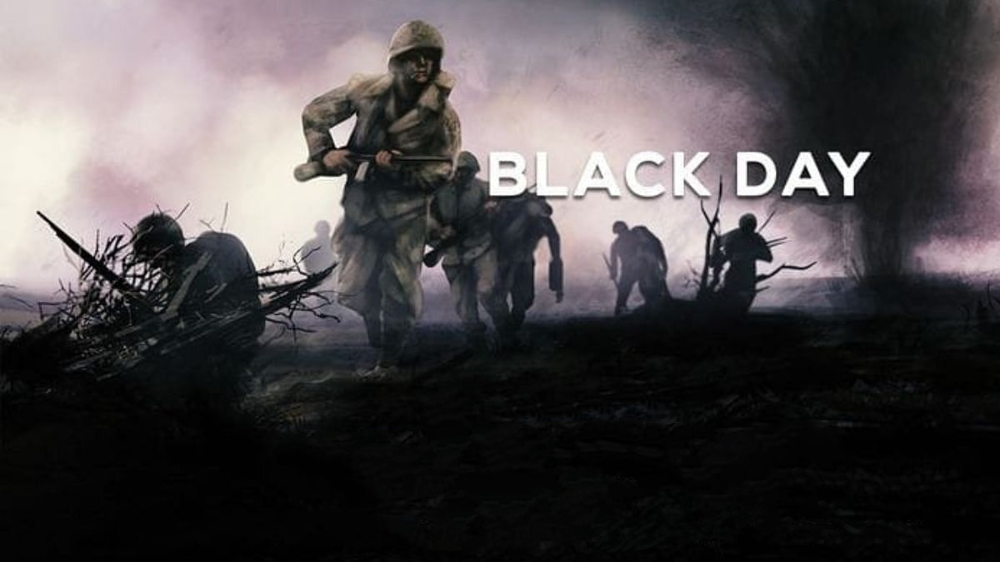

BLACK DAY
14 February 2019

Tribute to all the soldiers who lost their lives in Pulwama attack.
By soaking their uniforms in blood,
They left a true story to tell,
They gave a true sign of their love and affection towards the country.In kashmir our
soldiers sacrificed their lives showing their love for the mother earth.
Salute to all brave soldiers
BLACK DAY OF INDIA - PULWAMA ATTACK


description
-
On 14 February 2019, a convoy of 78 vehicles transporting more than 2,500 Central
ReservePolice Force (CRPF) personnel from Jammu to Srinagar was travelling on National Highway
44. The convoy had left Jammu around 03:30 IST and was carrying a large number of personneldue
to the highway having been shut down for two days prior. The convoy was scheduled to reach itsdestination before sunset.
-
At Lethpora near Awantipora, around 15:15 IST, a bus carrying security personnel was
ramme by a car carrying explosives. It caused a blast which killed 40 CRPF personnel of the
76th Battalion and injured many others. The injured were moved to the army base hospital in
Srinagar.
-
Pakistan-based militant group Jaish-e-Mohammed claimed responsibility for the attack.
They also released a video of the assailant Adil Ahmad Dar, a 22-year-old from Kakapora who
had joined the group a year earlier. Dar's family had last seen him in March 2018, when he
left his house on a bicycle one day and never returned. Pakistan denied any involvement, though
Jaish-eMohammed's leader, Masood Azhar, is known to operate in the country.
-
Balakot airstrike:- Indian security forces launched a counter-attack named
Operation Bandar and carried out airstrikes on February 26, 2019, in the Balakot
region at JeM camps in Khyber Pakhtunkhwa province of Pakistan. The province in question
is some 50 km from the Line of Control (LoC) where the Indian Air Force (IAF) sent
Israel-made “smart bombs” and 12 Mirage 2000 fighter jets and reportedly killed hundreds
of terrorists.
-
Pakistan retaliates:- A day after the Balakot airstrikes by India, Pakistan Air
Force retaliated and several F-16s entered Indian airspace on February 27, 2019, and
were said to have attempted to target Indian military installations in Jammu and Kashmir
which was foiled by the IAF. According to reports, one F-16 aircraft and two Indian
MiG-21 Bisons were destroyed.
-
It is the deadliest terror attack on India's state security personnel in Kashmir since
1989.